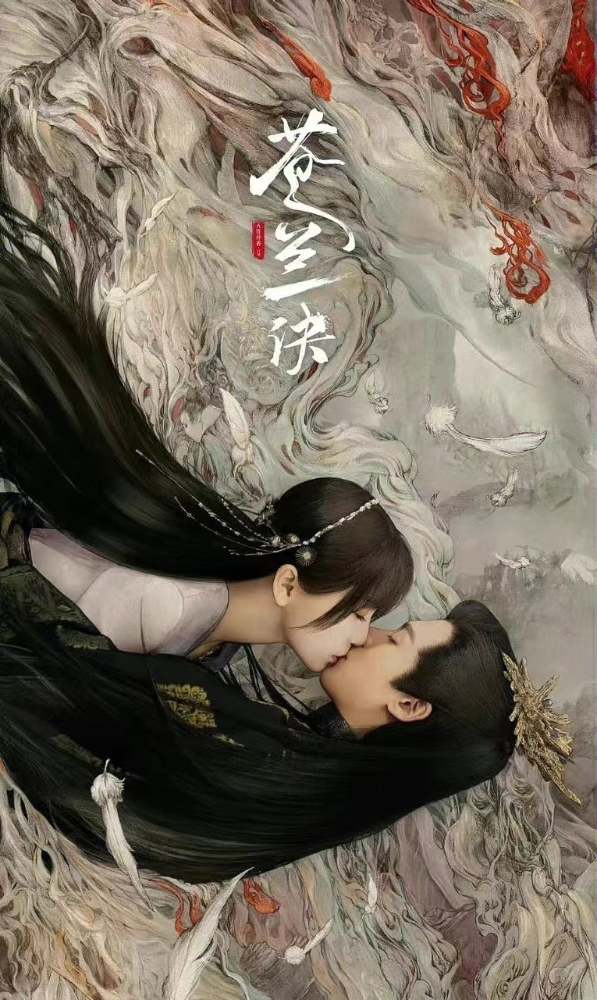
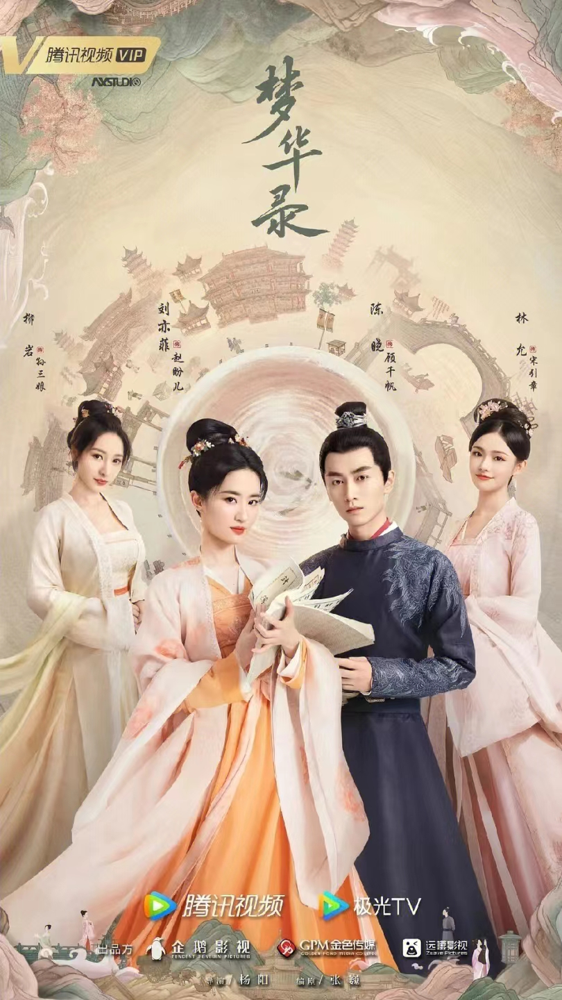

热播排行榜
好剧先知
-
《星汉灿烂》
程家女名少商， 因战乱自幼被父母留在祖母身边成为“留守儿童”，婶娘狠心纵容，意图将其养成废人... - 
《苍兰诀》
魄心族神女被魔尊东方青苍灭族，万年后重生成天界低阶仙女小兰花，无意间复活了困于昊天塔的灭族仇人魔尊... -
《开端》
该剧改编自祈祷君的同名小说，讲述了游戏架构师肖鹤云（白敬亭饰）和在校大学生李诗情（赵今麦饰）在遭遇公交车爆炸后“死而复生”... - 
《梦华录》
在钱塘开茶铺的赵盼儿惊闻未婚夫、新科探花欧阳旭要另娶当朝高官之女，不甘命运的她誓要上京讨个公道...